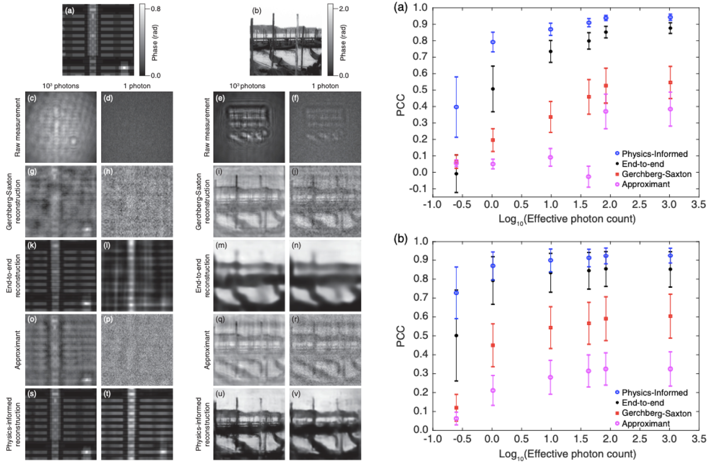

Low Photon Count Phase Retrieval Using Deep Learning
Physical Review Letters
In this publication, we experimentally demonstrate the effectiveness of our physics-informed deep neural network in the phase retrieval problem under extremely low photon counts. Compared with other classical iterative approaches, our method still maintains performance under conditions as low as 1 photon per pixel on average.
Rather than the typical mean squared error, we used negative Pearson correlation coefficient (NPCC) as our loss function, as previous work from our group showed the effectiveness of this metric. We also used a physical preprocess step, as means to incorporate physical knowledge into the learning scheme.
Imaging under such noisy conditions are particularly important when one has a limited imaging time or strict photon budget. The second case of strict photon budget, is often seen in the medical field. In X-ray imaging for example, there are maximum dosages of radiation a patient can be exposed to at a time. A method that maintains performance when the photon dosage is reduced is thus invaluable.
This project was supported by Intelligence Advanced Research Projects Activity (IARPA) No. FA8650-17-C-9113 and Singapore-MIT Alliance for Research and Technology (SMART) Grant No. 015824-00169.